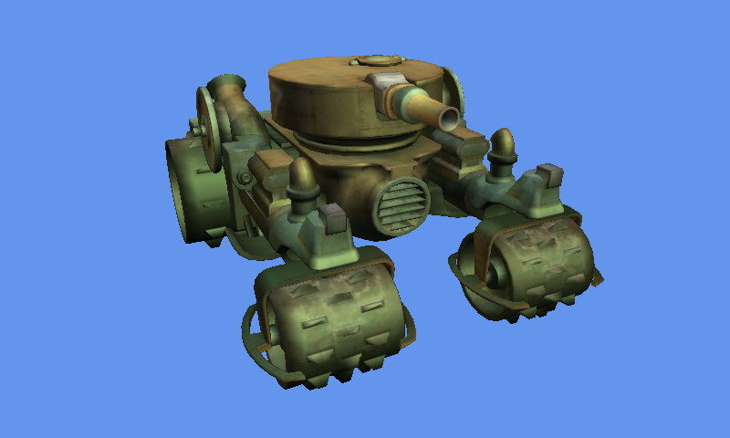

Custom Model Importer
Ported from Microsoft's XNA 4.0 Custom Model Importer Sample for Windows and Xbox 360.
Source for this sample on GitHub ↗

Play ▸Opens in a new tab. The tank rotates automatically. Focus the game to use its controls.
About this sample
The original sample demonstrates a custom OBJ model importer for the XNA Content Pipeline, including accompanying MTL materials and textures.
This page runs the sample's viewer with the original compiled tank and textures. It draws each mesh with BasicEffect lighting and rotates the model automatically.
Controls
| Action | Control |
|---|---|
| Stop the sample | Escape or gamepad Back |